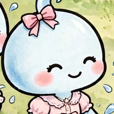
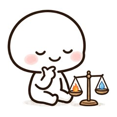
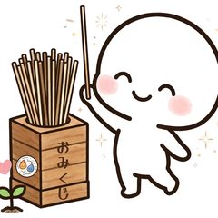
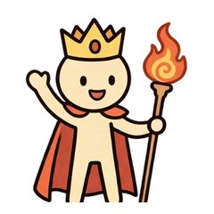
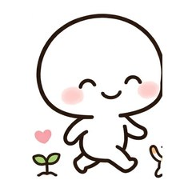

心体調整塾 たけちゃん
🌙 新月・満月、月のリズムで穏やかな毎日を
まず、森でひと休みどうぞ。
アトピー、喘息、心療内科、生活保護。ボロボロだった僕の歩みは、僕のストーリーはこちらに書きました。
毎日の生活に寄りそうアプリ

集まれ水女子の森感じているのに、言葉にできない。そんな水女子が、ほっと一息つける森です
▶
森のほっとニュース毎日の生活に、ご機嫌を。心が温まる、今日のいいニュース。四コマ漫画のコーナーもあります
▶
読む・調べるサイト
学ぶ・相談する
 水女子のための火育て塾🔥
水女子のための火育て塾🔥感じているのに言葉にできない、あなたへ。気持ちを言葉にする記事を届けています
▶
水女子あるある相談感じているのに言葉にできない、あるあるに答えます
▶
 火水相談｜夫婦のすれ違い実例集
火水相談｜夫婦のすれ違い実例集気になる場面を、言葉で検索できます
▶
診断とおみくじ

火水性質診断（無料）12タイプで、あなたの性質がわかります
▶

火水おみくじ毎日の火水バランスをチェック
▶
読む
苦労から生まれた、僕の学び43年の苦労と、そこからの学びを書いたマガジンです
▶
 火水絵本
火水絵本言葉がとくいな子と、感じすぎる子の物語
▶
note｜火水性質診断火水×パートナーシップの記事と実例集
▶
 note｜心体調整塾
note｜心体調整塾心と体の読みもの
▶
SNSとスタンプ
📷 Instagram毎日の発信は、こちら
▶
＠
Threads夫婦のすれ違いを、火水で読み解く毎日投稿
▶

LINEスタンプ火水キャラクター ほか、作品一覧
▶

心体調整塾ホームページ火水性質分析の全体像は、こちら
▶
🗺️
全体マップ全サイトと中身が、一目で見られます
▶
よくある質問
たけちゃんリンクは、どんなページですか？
心体調整塾 たけちゃんの、すべての窓口を集めたリンク集です。集まれ水女子の森、森のほっとニュース、火水絵本、水女子のための火育て塾、火水性質診断、noteやInstagramなど、全部のサイトとSNSへ、ここから進めます。
どこから見るのがおすすめですか？
まず「集まれ水女子の森」でひと休みするのがおすすめです。感じているのに言葉にできない水女子が、静かに過ごせる場所です。毎日のニュースが気になる方は「森のほっとニュース」、気持ちを言葉にする学びに興味のある方は「火育て塾」へどうぞ。
月のリズムで暮らすためのサイトはありますか？
あります。「集まれ水女子の森」です。月のカレンダーが中心のサイトで、新月・満月の日と、その星座に合わせたメッセージ、惑星の順行・逆行が分かります。新月の時期には、願いごとを書いたカード画像を作って、持ち帰ることもできます。このページのいちばん上のリンクから進めますよ。
利用は無料ですか？
このページも、リンク先の主なサイト（森・ほっとニュース・絵本・診断・おみくじ）も、無料で使えます。登録も不要です。
たけちゃんは、どんな人ですか？
心体調整塾のたけちゃんです。食品工場の製造技術者、心と体の整体師研究、土木設備の技術者を経て、夫婦15年の研究から生まれた「火水性質分析」をもとに、noteやSNSで発信しています。くわしい歩みは、リンク先の「僕のストーリー」に書きました。